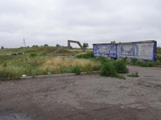
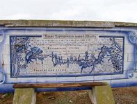
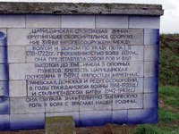
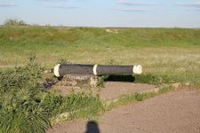

Сразу же на въезде в Городищенский район находится один из интереснейших исторических памятников Волгоградской области. Это Царицынская сторожевая линия или Вал Анны Иоанновны - оборонительное сооружение времен Петра I. Найти памятник и остатки Вала, сохранившиеся спустя несколько веков после сооружения, не сложно - они находятся непосредственно у трассы М6. Не пропустите одну их интересных достопримечательностей, которую стоит посетить в Волгоградской области.

Царицынская сторожевая линия
Описание
Причины создания
Царицынская сторожевая линия, он же Вал Анны Иоанновны — комплекс оборонительных сооружений, перекрывавший перешеек между реками Дон и Волга. Царицынская сторожевая линия вместе с новой крепостью считалась одним из крупнейших оборонительных сооружений в Европе того времени. Линия была задумана Петром I еще в 1694 году. Создавалась с целью избежать опустошительных набегов крымских татар, кочевых народов Поволжья (калмыков, казахов), а также казаков (на момент строительства линии бывших независимым от Российской империи вольным военно-разбойничным сообществом). Особенно разрушительным был Кубанский погром в августе — сентябре 1717 года. После этого набега по указу Петра I от 15 ноября 1717 года в 1718 году было начато строительство.
Строительство
Сооружение Царицынской сторожевой линии было начато бригадиром Кропотовым в 1718 году. Линия сооружена от Царицына до станицы Качалинской — в месте кратчайшего сближения двух рек, на территории современных Городищенского и Иловлинского районов. Основные работы были закончены в 1720 году. В состав линии вошли: каменная крепость Царицын, четыре деревянно-земляных крепости (Мечетная, Грачевская (теперь — хутор Грачи), Осокорская и Донская), 23 земляных редана с караульным сооружением, огороженные частоколом. На строительство согнали десятки тысяч людей, которые в течение двух лет насыпали громадный вал длиной в 60 верст (54 километра) и высотой до 12 метров. В наиболее возвышенных местах вала поставили батареи, которые держали под обстрелом окрестности вала. Около батарей проходил глубокий ров. По верху земляного вала был сооружен частокол из заостренных верху кольев.
Современное состояние
На пересечении федеральной трассы M6 "Каспий" и Царицынской сторожевой линии в 6 километрах от станицы Качалинская
есть хорошо сохранившийся участок линии с площадкой для остановки автотранспорта, мемориальной табличкой,
старинной пушкой и бетонной стелой, показывающей профиль вала с банкетом для стрельбы в его подлинных размерах
на момент сооружения в 1720 году.
Царицынская сторожевая линия (Вал Анны Иоанновны) - одна из достопримечательностей
Городищенского района Волгоградской области, является археологическим памятником областного значения.
Фотографии
   
Расположение
 )
)
Расположение Царицынской сторожевой линии на интерактивной карте
Царицынская сторожевая линия находится на границе Городищенского и Иловлинского районов Волгоградской области.
При движении с московского направления ориентиром может служить поворот на Качалино, после которого Вам останется проехать еще около 7 километров.
При движении из Волгограда, ориентиром может служить пересечение заброшенный железнодорожный переезд в Самофаловке, после которого до сторожевой линии Вам останется проехать 11 километров.
Дополнительная информация
Объект культурного наследия РФ №3400172002